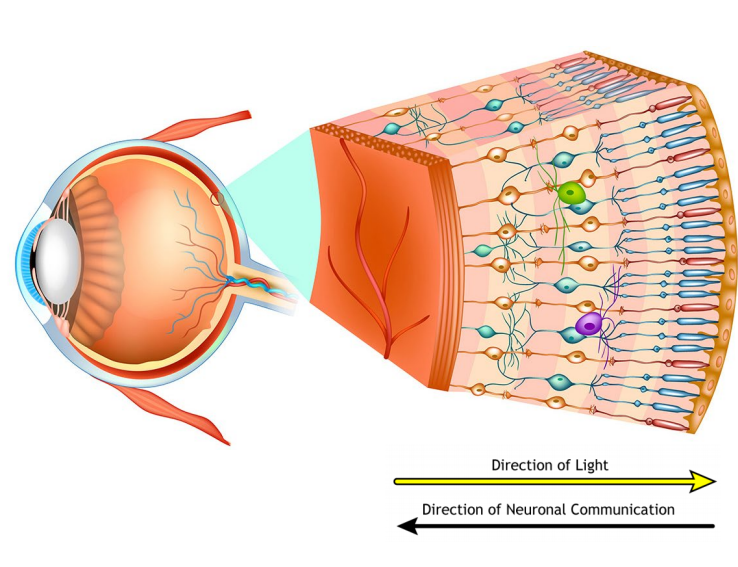
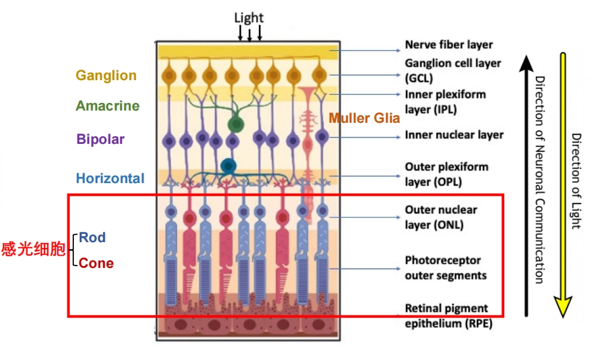
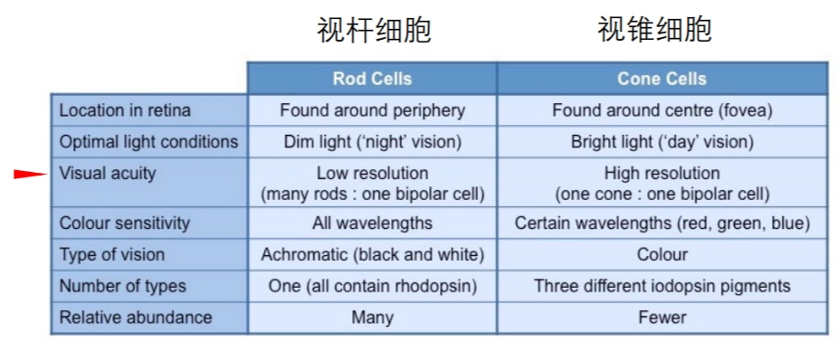
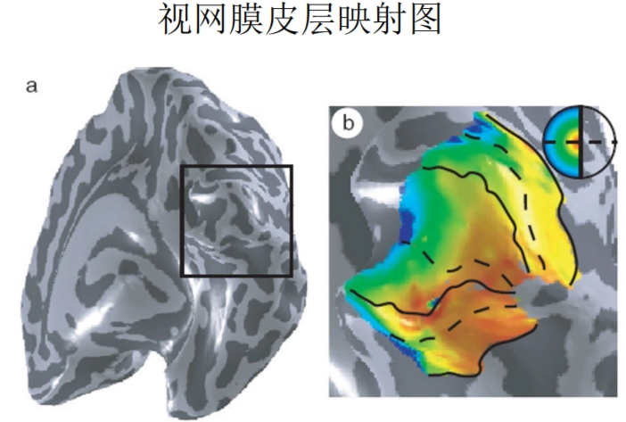
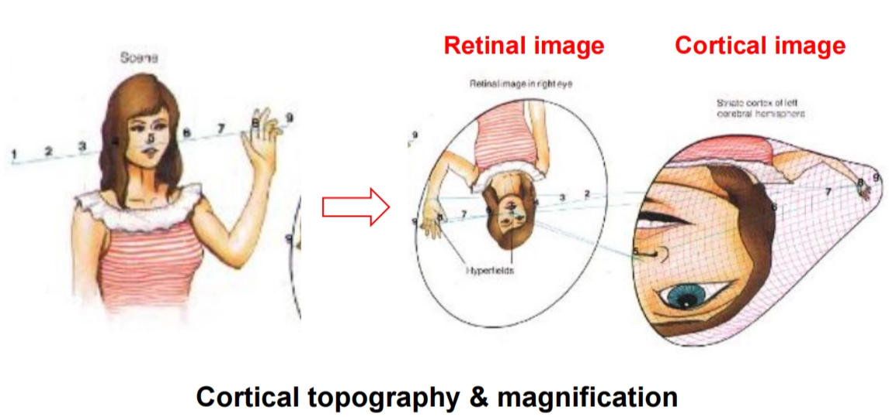
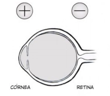
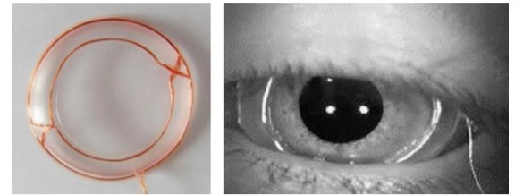

眼动基础
眼动的生理基础
眼动：视觉系统主动选择信息的行为表现，是大脑加工结果的一种外在体现
眼动追踪本身不直接记录大脑神经活动，但反映认知过程
视网膜retina和中央凹fovea


- 视觉传导机制： ①光经过整个视网膜的神经细胞网络到达感光细胞 ②视锥细胞、视杆细胞换能作用：光能转化为神经冲动 ③传递机制： 感光细胞→双极细胞（第一级）→视神经节细胞（第二级）【视神经节发出的神经纤维视交叉后传至丘脑外侧膝状体】→第三级神经元的纤维【从外侧膝状体发出】【终止于大脑枕叶视觉中枢】 ④横向整合： 图中还标注了水平细胞和无长突细胞。它们不是直接传递信号给大脑，而是在横向层面进行调节。水平细胞连接光感受器和双极细胞，无长突细胞连接双极细胞和神经节细胞。它们的作用是进行侧向抑制，增强明暗对比和边缘检测——这是视觉系统在眼球内部进行的初步信息加工，也是"为什么眼动能反映认知"的生理起点之一。

在中央凹处，光线可以直接到达感光细胞，最大程度上减少了光的散射和吸收，为高清晰度视觉创造了"物理光学窗口"。
- 视锥细胞和视杆细胞功能及分布差异
- 视锥细胞：明、颜色、精细化
- 视杆细胞：暗、动态

一个视锥细胞连接一个双极细胞、再连接一个神经节细胞，保证了信号的高保真度 || 大量视杆细胞会汇聚到同一个神经节细胞上，空间分辨率急剧下降 - 外周视野：视觉拥挤效应 - 如果不移动眼睛，你很难识别外周的具体字母。这是因为外周视野中多个物体的信号在视觉通路中互相干扰。这意味着，外围视野只够用来检测"有没有东西"和"东西在哪里"，而无法完成精细的识别。

视锥细胞分辨率高，主要感受细节，而视锥细胞主要集中在中央凹
大脑和皮层放大因子the cortical magnification factor
视网膜：接收并把光能转换为化学能量
视神经optic nerve：化学能量激活nerves把message传到大脑



- 在中央凹处，皮层放大因子约为 0.15°/mm（即视野中每 0.15° 的信息占据皮层 1mm 的范围）
- 而在距中央凹 20° 的外周位置，这个数字变成 1.5°/mm
大约 25% 的视觉皮层专门用于处理中央凹2.5° 的视觉场景
中央凹信息在皮层中占据了巨大面积，视网膜上同等大小的视野，中央凹区域在皮层中被放大了约10倍。That means中央凹看到的东西 = 大脑当前正在重点加工的东西。
肌肉
- 三对拮抗肌
这三对肌肉的精密配合，使眼球可以在任意方向上高速旋转，将中央凹对准新的目标
- 水平运动（内直肌与外直肌）
- 垂直运动（上直肌与下直肌）
- 旋转运动（上斜肌与下斜肌）

- 中央凹在轴上 大小约一臂距离的大拇指指甲盖大小

中央凹在眼球后极中心（共轴），而眼球肌肉系统能够快速、精准地重新部署中央凹
总结
视觉系统在结构上"强迫"大脑必须通过移动眼睛来选择信息
!!! tip 💡
**为什么眼动追踪可以反映认知过程？**
- “清晰看见”依赖于中央凹【外周视野→视觉拥挤效应】
- 在中央凹处，**光线可以直接到达感光细胞**，衰减较少
- 视锥细胞**分辨率高**（精细化，主要感受细节），且主要分布在中央凹处
- “重要”的信息来自中央凹【视觉处理系统给的资源多所以重要】
- **大脑和皮层放大因子**：中央凹在大脑皮层中占据了很大的面积，即中央凹获取的信息享有优先级（极大的处理资源）
---
- 中央凹和眼动的关系
- 非常小+在轴上，所以必须移动：中央凹仅覆盖一臂距离大拇指指甲盖大小的视野+在眼球后极中心
- 眼球肌肉系统实现移动：实现快速、精准地重新部署
眼动的分类与模式
注视fixational eye movement
- 定义：眼睛相对稳定地停留在某一位置的阶段
不是绝对不动，otherwise会导致神经元适应，即视神经反应下降e.g.雪盲现象（因为周围都一样，动了等于没动） - 心理学意义 - 位置：当前正在选择或处理的信息区域 - 时间：反映加工难度、认知负荷、兴趣程度 - 次数：某一区域对任务的重要性或吸引力 - 分类
| 类别 | 漂移drift | 震颤tremor | 微眼跳microsaccades |
|---|---|---|---|
| 速度/频率 | 缓慢（约50 arcmin/s即约 0.83°/s） | 高频（≥100Hz） | 快速 |
| 每秒约1-2次 | |||
| 连续 | |||
| 相对不规则 | |||
| 幅度 | 较小，<0.1° | 极小，约0.004° | 小，<1°/0.5° |
| 特点 | 通常出现在微眼跳之间 | 眼球震荡，通常叠加在漂移之上（）相伴而生 | 类似扫视 |

-
后像afterimage可以感觉到微眼跳
强刺激适应后，在视网膜或早期视觉系统中留下的暂时性残留影像 - 注视把眼动抑制到一定水平，视锥细胞产生适应性
眼跳saccade
- 定义：眼睛在两个注视点之间快速跳转的运动 <阅读时非常明显>
-
心理学意义
- 幅度amplitude：信息采样范围
- 速度velocity：与眼动控制和神经运动机制
- 方向direction：搜索策略或阅读方向
-
潜伏期latency：注意转移和反应准备
- 眼跳潜伏期 眼跳发生前计划和实施眼跳的时间 目标刺激出现 到 眼跳开始（150~175ms）

-
认知过程影响眼跳潜伏期
如果目标里包含的信息复杂、难以辨别，你的潜伏期就会变长。反过来，如果目标有极强的吸引力，潜伏期也可能被缩短。所以，测量潜伏期的长短，可以用来推断个体在处理信息时的难度和投入程度。 - 眼跳潜伏期的增长通常会使目标定位的准确性增加
更长的准备时间往往意味着更高的精准度。当你有更充足的时间进行神经编码，第一次眼跳就正中目标的概率就会更高。这反映了大脑眼动控制系统为追求精度，会策略性地延长时间。 - 全局效应
当屏幕上同时出现两个较近的目标时，你的第一发眼跳很可能没有落在任何一个目标上，而是落在两者之间的中点。这说明在大脑加工的第一个阶段，两个目标被视为了一个整体。要做出精确的眼跳，大脑需要更多时间来将这个模糊的整体解析为两个独立的目标。这个现象生动地证明，潜伏期内大脑对视觉信息的处理是分层的，先从模糊整体到清晰细节。 - 注视点先于目标消失，潜伏期缩短
眼跳潜伏期不只是感觉器官的反应时间，其中包含了注意脱离和运动准备这两个可被分离的认知/神经过程。当你人为地提前完成"脱离"，潜伏期就显著缩短。 - 存在年龄差异
儿童眼动的特征与成人不同，他们控制眼动的脑区尚在发育，潜伏期通常更长 - 眼跳抑制 正在眼跳过程中，眼睛对视觉输入的敏感性会降低

- 眼跳期间的闪光不会被被试报告

- ↑ 两个刺激之间间隔<100ms时直接看向第二个刺激

- 在第一个眼跳过程中呈现第二个眼跳，第二个眼跳潜伏期的时间会明显变长
追随运动smooth pursuit
相对研究会少一点，与运动关系更大一点 - 定义：观看运动物体时，头不动，眼睛追随物体运动 p.s.通常需要一个真实的运动目标，人很难在没有移动目标的情况下随意产生稳定的平滑追踪运动 - 心理学意义 - 运动知觉 - 预测性视觉加工 - 动作控制 - 注意与视觉运动整合

上面这个图可以看到追踪其实是不太好的，尤其是速度比较快的时候，但是我们可以通过一些方法：
-
（补偿眼动）头部或身体运动时，为注视一个物体，眼球做出与头部或身体运动方向相反的运动
老师上课给的解释是，追不上的时候快一点到物理刺激前面等等它
眼动记录方法与技术
- 眼动追踪eye tracking记录什么？
- eye positions
- eye movement
!!! tip 💡
- 总之，要记录：
- horizontal(x)&&vertical(y)
- positions of gaze overtime(t)
传统方法
- 观察法
- 直接：（为减小干扰）镜子、偷窥孔法
-
间接：后像<被试自己报告>
- 无主试预期但引入了被试预期
<因为它固定在视网膜上，大脑补偿机制失效> 我自己的理解是：网像系统，眼动+网动==静止，但是后像在视网膜上是绑定的 - 机械记录 - 利用角膜凸起 - 有创+眼球运动受限+精度问题
当代方法
眼电图法EOG
-
眼睛周围贴电极片，记录电位差
-
电位差：角膜与网膜代谢水平差异（0.4-1.0mV）

-
-
优点：便宜；高时间分辨率；可测量闭眼眼动
- 缺点：低空间分辨率（我知道你往左看，但是不知道你在看啥），难判断落点 Thus我们多用于诊断（粗糙分类）
电磁感应法（巩膜搜索线圈法）

- 优点：高空间（0.01°）&&时间分辨率（1000Hz）
- 缺点：侵入性、不舒适、设备复杂、不适合大样本研究
引入眼睛本身光学结构
光学记录法<利用光学信号>
眼睛的不同结构（瞳孔、角膜、虹膜和巩膜）在光照下会形成不同的图像特征或反射特征。可以通过这些光学信息估计眼睛的转动方向。
虹膜-巩膜反射法

- 为啥用红外：不可见光不会对视觉过程产生干扰，但眼睛可以反射（Then反射率差异记录边界变化）
- 缺点：没有那么精细
普金野图像跟踪法

- 四个反射（i.e.普金野反射）利用差异最大的1、4层反射，寻找夹角变化推断眼球运动
- 缺点：太精细，需要控制头动（bitebar）
瞳孔-角膜反射法
- 工作原理：角膜反射（就是这个亮斑），头不动这个亮斑是不会动的，但眼动的时候瞳孔是会动的


视频记录法